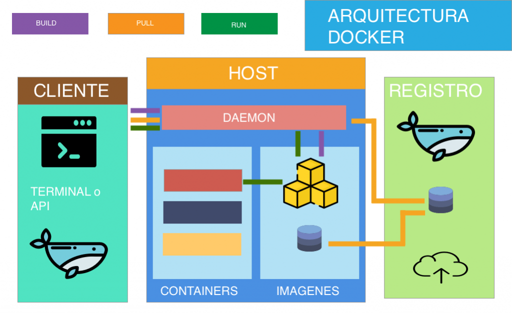

Si desarrollas un software y quieres pasarlo de un servidor instalado en un centro de datos a una máquina virtual que funciona en una nube pública, tal vez el código no termine de funcionar del todo bien en su nuevo entorno. Si ese software desarrollado lo metes en un contenedor lo puedes llevar al sistema que más te convenga. El contenedor actúa como una funda para el software que lo habilita para funcionar dentro del nuevo entorno.
Los contenedores ofrecen a los desarrolladores la capacidad de crear entornos predecibles que están aislados de otras aplicaciones. Los contenedores también incluyen dependencias de software que necesita la aplicación, como versiones específicas de entornos de ejecución de lenguajes de programación y otras bibliotecas de software. Desde la perspectiva del desarrollador, se garantiza que todo esto sea uniforme, sin importar dónde se implemente la aplicación en última instancia
Podemoa hablar de la herramienta DOCKER de windows como un producto que le permite configurar un contenedor en un sistema operativo como Windows 10. En nuestra máquina de Windows 10, primero tendremos que descargar Docker para Windows. Una vez descargado, instálelo adecuadamente. Cuando termine, le solicitara que cierre su sesión en Windows—cierre y vuelva a iniciar.
Leer másGrandes compañias como compañías cómo Spotify, ING Direct, Uber, eBay o PayPal son, entre otras muchas empresas ejemplos de una correcta implementación de Docker en sus modelos empresariales, ahorrando tiempo y equipamiento a la empresa, que se traduce inmediatamente en una menor inversión y por ende mayor beneficio.
Leer másLo primero que tenemos que entender es que las imágenes son previas, creadas por un usuario y los contenedores o containers son aplicaciones asiladas que contienen una o más imágenes. Estos contenedores contienen todo lo necesario para ejecutar una aplicación.
